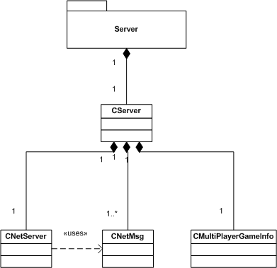

Klientem je kadá jednotlivá koncová stanice hráèù. Klient zajišuje pøedevším komunikaci se serverem a poskytuje ostatním
èástem projektu informace, které potøebují vìdìt. Klient je nadøazen
grafickému renderovacímu systému, HUDu, hudebnímu systému a nìkterım dalším
ménì vıznamnım èástem. Sluby klienta vyuívají zejména dialogy. Sám klient
vyuívá slueb resource manageru, konfigurace a dalších èástí poskytujících
globální sluby (projekt Globals).
Obrázek 5.1: Postavení klienta vùèi ostatním èástem aplikace
Implementace klienta se skládá z následujících èástí:
- Tøída CClient - je jádrem implementace klienta. Uchovává
stav (z mnoiny stavù, do kterıch se klient mùe dostat), ve kterém se klient
nachází. Pro kadı stav má funkci, která slouí jako message handler (zpracovatel
zpráv) zpráv pøicházejících od serveru, které se pro danı stav nìjakım zpùsobem
vyhodnocují. Obsahuje síové sluby, hudbu, HUD, informaèní tøídu CMultiplayerGameInfo.
- Síové sluby v podobì tøíd CNetMsg a CNetClient.
Tøída CNetMsg implementuje zprávy, které chodí po síti. TøídaCNetClient
zajišuje pøíjem a posílání zpráv po síti a rozesílání a pøíjem broadcastu.
- HUD (Head-up display) v podobì tøídy CHUD, která zajišuje
informaèní interface pro hráèe jako je ukazatel rychlosti, tabulka prùbìného poøadí, atd...
- Hudba v podobì tøídy CSoundSystem, která zajišuje pøehrávání
hudby.
- Informace o jednotlivıch hráèích, podstavech, nastavení konkrétní hry (mapa,
auta, atd...), funkcí na nastavení jednotlivıch typù zpráv, funkcí na "rozbalení"
jednotlivıch typù zpráv, atd... v podobì tøídy CMultiplayerGameInfo.
- Tøídu CGameInfo, která zajišuje funkce prohledávání adresáøù
pro seznam map, aut a hudby. Zajišuje ukládání, nahrávání a pøístup
do traovıch rekordù.
- Soubory MapInit.h a MapInit.cpp, ve kterıch
jsou umístìny funkce pro nahrávání mapy a aut
Obrázek 5.2: Jednotlivé souèásti klienta
Klient se mùe nacházet v rùznıch stavech. Podle stavu, ve kterém se nachází,
se volá funkce slouící jako message handler a zpracovávající zprávy pøicházející
ze serveru. Stav klienta se dá zmìnit voláním funkce ChangeState().
Stavy, ve kterıch se klient mùe nacházet, jsou následující:
- CS_NULL - Základní stav klienta, ve kterém nepøijímá ádné
zprávy od serveru
- CS_SG_START - Stav nahrávání single playeru (hry jednoho
hráèe)
- CS_MG_ENUMERATE_HOSTS - Stav, kdy klient pøijímá a vysílá
broadcast, aby se dozvìdìl o dostupnıch herních serverech naší aplikace na
lokální síti
- CS_MG_START - Stav, kdy je klient pøipojen k serveru, hráè
si vybírá auto, jméno, chatuje s ostatními hráèi
- CS_MG_START_LOAD - Stav, kdy se nahrává multi player (hra
pro více hráèù)
- CS_GAME_PLAY - Stav, kdy bìí samotná hra
- CS_RACE_RESULT - Stav, kdy jsou hráèovi zobrazovány vısledky
závodu
Funkce ClientMessageHandler() podle stavu, ve kterém se klient
nachází, zavolá pøíslušnou funkci message handleru, která se postará o vıbìr
a zpracování zpráv od serveru. Jedná se o následující funkce:
- ClientMultiEnumMH() pro stav CS_MG_ENUMERATE_HOSTS
- ClientMultiStartMH() pro stav CS_MG_START
- ClientSingleStartMH() pro stav CS_SG_START
- ClientGameMH() pro stav CS_GAME_PLAY
- ClientMultiStartLoadMH() pro stav CS_MG_START_LOAD
- ClientRaceResultsMH() pro stav CS_RACE_RESULT
Funkce ClientMessageHandler() se volá periodicky, aby byl
zajištìn plynulı vıbìr zpráv od serveru. Postup komunikace mezi serverem a klientem
je popsán dále v dokumentaci klienta.
Tøída CClient obsahuje také funkce, které spouští nahrávání
hry pro single player i pro multiplayer na stranì klienta. Pro single player
se jedná o funkci ClientStartSingleiLoad(). Pro multiplayer
se jedná o funkci ClientStartMultiLoad(). Postup nahrávání
mapy a aut je popsán v dokumentaci klienta.
Tøída CClient obsahuje:
- Tøídu CHUD - Head-up display
- Tøídu CSoundSystem - hudba
- Tøídu CNetClient - síová komunikace se
serverem
Mapa se nahrává pomocí funkce MapInit() implementované v souboru
MapInit.cpp. Mapa se vdy nahrává pøed nahrátí aut hráèù. Postup nahrávání mapy je následující:
- Resource manager nahraje obsah souboru mapy i s dalšími
závislımi soubory na mapì.
- Nahraje se grafická reprezentace terénu v tøídì CScene
promìnná Map - funkce Init() tøídy CGrObjectTerrain.
- Vytvoøí se zeï kolem celé mapy - funkce InitBorders() tøídy
CGrObjectTerrain.
- Nahraje se tráva - funkce InitGrass() implementovaná v
souboru MapInit.cpp.
- Nahraje se obloha - funkce Init() tøídy CGrObjectSkySystem.
- Do reprezentace scény se nastaví svìtlo od slunce a ambientní svìtlo.
- Nahrají se jednotlivé objekty na mapì. Kadı objekt se inicializuje pomocí
funkce Init() tøídy CGrObjectMesh. Kadı
objekt se správnì natoèí a pøidá buï do seznamu statickıch (StaticObjects)
nebo dynamickıch (DynamicObjects) objektù tøídy CScene.
- Jestlie je k objektu pøiøazené svìtlo typu LT_LAMP, nahraje
se a pøidá se do seznamu svìtel Lights tøídy CScene,
navíc se indikuje pøíslušnému políèku mapy, e na nìm stojí lampa. Jestlie
je svìtlo typu LT_FOGLAMP, jedná se typicky o light glow
billboard (prùhlednou texturu nahrazující svit svìtla). V takovém pøípadì
se pøíslušné svìtlo s nahranou texturou pøidá do seznamu TransparentObjects
tøídy CScene. Také se indikuje danému objektu, ke kterému
svìtlo patøí, e toto svìtlo vlastní.
- Nahrají se textury silnic, správnì se natoèí a pøiøadí se patøiènému políèku
na mapì.
Auto se nahrává pomocí funkce LoadCar() implementované v souboru
MapInit.cpp. Jednotlivá auta se vdy nahrávají a po nahrání
mapy. Postup nahrávání auta je následující:
- Resource manager nahraje obsah souboru auta i s dalšími
závislımi soubory.
- Nahraje se grafická reprezentace auta - funkce Init() tøídy
CGrObjectCar.
- Nahraje se svìtlo od auta typu LT_CARREFLECTOR (paklie
ho auto má). Pøidá se k modelu auta.
- Nahrají se svìtla typu LT_FOGLAMP. Pøidají se do seznamu
TransparentObjects tøídy CScene. Indikuje
se, e patøí k danému autu.
- Nastaví se startovní pozice auta podle poøadí nahrávaného auta - funkce
SetCarPosition() implementovaná v MapInit.cpp.
- Nahraje se grafická reprezentace kol od auta. Pøidají se do seznamu DynamicObjects
tøídy CScene. Indikuje se, e kola patøí k danému autu.
Komunikace mezi serverem a klientem se dìje pomocí tøídy CNetClient.
Komunikace se dìje dvojím zpùsobem:
- Broadcast - je posílán všesmìrovì po lokální síti nespojovanì,
nespolehlivì pomocí UDP datagramù
- Pøímá komunikace - je provádìna spojovanì a spolehlivì
pøes protokol TCP/IP
Tøída CNetMsg implementuje síovou komunikaci pomocí Windows
Sockets 2. Broadcast se pouívá na to, aby se na
lokální síti našly herní servery naší aplikace. Komunikace pomocí broadcastu
probíhá implicitnì na portu 58788. Èíslo portu se dá zmìnit nastavením parametru
NtBroadport v options.cfg. Posílání broadcastu
je implementováno ve tøídì CNetMsg tøemi funkcemi
StartBroadcast(), StopBroadcast(), SendBroadcastMsg().
Pøímá komunikace se pouívá na veškerou komunikaci s konkrétním
herním serverem. Na to slouí funkce SendMsg(). Jestlie nastane
chyba v komunikaci se serverem nebo je jinım zpùsobem komunikace pøerušena,
je vyhlášena chyba a komunikace se serverem skonèena. Pøímá komunikace
implicitnì probíhá na portu 58787. Èíslo portu se dá zmìnit nastavením
parametru NtPort v options.cfg.
Zprávy, které chodí mezi serverem a klientem pøedstavuje tøída CNetMsg.
Zprávy, které chodí mezi serverem a klientem jsou rùznıch typù. Typy
zpráv jsou následující:
- NETMSG_PING - Zpráva obsahující ping pro testování, jestli
je spojení mezi serverem a klientem ivé
- NETMSG_PING_BACK - Odpovìï na zprávu typu NETMSG_PING.
Tato zpráva je urèena pro testování, jestli je spojení mezi serverem
a klientem ivé
- NETMSG_ACCEPTED - Zpráva øíkající, e spojení se serverem
bylo úspìšnì navázáno
- NETMSG_PLAYER_MAP_NAME - Zpráva obsahující jméno mapy (vèetnì
relativní cesty defaultnì z adresáøe Maps)
- NETMSG_PLAYER_ID - Zpráva obsahující ID, jedineènou identifikaci
klienta, kterou klientovi pøidìluje server pøi pøipojení
- NETMSG_PLAYER_CRC - Zpráva obsahující seznam CRC (Cyclic
redundancy check) souètù, které slouí ke kontrole, jestli jsou na všech stranách
(klientù a serveru) stejné soubory
- NETMSG_PLAYER_CAR_NAMES - Zpráva obsahující seznam všech
jmen souborù aut (vèetnì relativní cesty defaultnì z adresáøe Objects)
- NETMSG_PLAYER_STATUS - Zpráva obsahující stav hráèe - ID,
jméno hráèe, jméno souboru auta hráèe, je-li hráè pøipraven, je-li hráè aktivní
- NETMSG_MAP_SETTINGS - Zpráva obsahující údaje o nastavení
mapy - doby hry, je-li zapnutı reim hry na kola, poèet kol
- NETMSG_GAME_NAME - Zpráva obsahující jméno hry
- NETMSG_CHAT - Zpráva obsahující zprávu z chatu mezi hráèi
- NETMSG_MULTIGAME_STARTLOAD - Zpráva indikující zaèátek
nahrávání hry pøi multiplayeru
- NETMSG_PLAYER_LOADED - Zpráva oznamující, e hráè (klient)
byl úspìšnì nahrán
- NETMSG_STATIC_POSITION - Zpráva obsahující postavení všech
statickıch objektù
- NETMSG_CAR_SPEED - Zpráva obsahující rychlost hráèova auta
- NETMSG_CAR_GEAR - Zpráva obsahující zaøazenı stupeò rychlosti
auta
- NETMSG_CHECKPOINT_POSITION - Zpráva obsahující pozici kontrolního
bodu na trati, kterım hráè musí projet
- NETMSG_LAPS_GONE - Zpráva obsahující poèet odjetıch kol
- NETMSG_RACE_POSITION - Zpráva obsahující prùbìnou hráèovu
pozici v závodì
- NETMSG_RETURNTOLOBBY - Zpráva indikující poadavek o návrat
do lobby (tj. ukonèením multiplayeru návratem do lobby)
- NETMSG_CAR_POSITION - Zpráva obsahující pozici auta
- NETMSG_OBJECT_POSITION - Zpráva obsahující pozici dynamického
objektu
- NETMSG_CONTROLS - Zpráva obsahující informaci o stavu kláves
- NETMSG_BROADCAST_DEMAND - Zpráva slouící jako ádost o
vysílání broadcastu
- NETMSG_BROADCAST_SERVER_INFO - Zpráva obsahující identifikaci
serveru v lokální síti
Samotná zpráva tøídy CNetMsg je potom sestavena z délky zprávy,
typu zprávy a obsahu zprávy pomocí funkce SetNetMsg().
Nahrávání single playeru probíhá ve stavu klienta CS_SG_START.
Nahrávání single playeru se spouští zavoláním funkce startSinglePlayer()
implementované v InitFunctions.cpp.
Postup nahrávání single playeru je následující:
- Nahraje se server - funkce StartServerSingle() tøídy CServer.
- Nahraje se klient - funkce ClientStartSingleLoad().
- Klient naváe se serverem spojení.
- Server se pøepne do stavu SS_GAME_PLAY.
- Server klientovi pošle pozice všech statickıch objektù na mapì - funkce
SendAllStaticObjectsPositions(), zpráva NETMSG_STATIC_POSITION.
- Server klientovi pošle pozice všech dynamickıch objektù na mapì - funkce
SendAllDynamicObjectsPositions(), zpráva NETMSG_OBJECT_POSITION.
- Pokud se jedná o mód hry na kola, pošle server klientovi pozici prvního
checkpointu. Zpráva NETMSG_CHECKPOINT_POSITION.
- Server klientovi pošle zprávu NETMSG_ACCEPTED.
- Klient pøijme všechny zprávy.
- Klient se pøepne do stavu CS_GAME_PLAY.
Klient pøijímá info o herním serveru pouze ve stavu CS_MG_ENUMERATE_HOSTS.
Celı postup je následující:
- Pøepnutím klienta do stavu CS_MG_ENUMERATE_HOSTS se nastartuje
sluba broadcastu voláním funkce StartBroadcast().
- Periodicky se posílá zpráva typu NETMSG_BROADCAST_DEMAND
pomocí funkce SendServersInfoDemand().
- Jestlie se v lokální síti nachází nìjakı herní server naší hry, odpoví
zprávou typu NETMSG_BROADCAST_SERVER_INFO.
- Zpráva typu NETMSG_BROADCAST_SERVER_INFO je pøijata message
handler funkcí ClientMultiEnumMH().
- Herní server je pøidán do seznamu herních serverù pomocí funkce AddServer().
- Pokud je server urèitou dobu neaktivní, je ze seznamu herních serverù zase
vyøazen.
Jestlie se klient úspìšnì pøipojí k serveru, skonèí klient ve stavu CS_MG_START
a informaèní stav tøídy CMultiPlayerGameInfo skonèí ve stavu
PHASE_THREE.
Postup pøipojení klienta k serveru je následující:
- Klient se pøipojí k serveru - funkce ConnectToServer() tøídy
CClient.
- Server pøijme hráèe. Jestlie server odmítne hráèe, komunikace skonèila
a server hráèe odpojí.
- Server pošle klientovi zprávu, e byl pøijat - zpráva NETMSG_ACCEPTED.
- Server pošle klientovi jeho unikátní ID - zpráva NETMSG_PLAYER_ID.
- Server pošle klientovi jméno hry - zpráva NETMSG_GAME_NAME.
- Server pošle klientovi jméno mapy a pøíslušné kontrolní souèty pøiøazené
k mapì. Zprávy NETMSG_PLAYER_MAP_NAME a NETMSG_PLAYER_CRC.
- Server rozešle všem ostatním klientùm zprávu o tom, e byl pøijat novı klient.
- Klient pøijme zprávu NETMSG_ACCEPTED a nastaví stav informaèní
tøídy CMultiPlayerGameInfo na PHASE_ONE.
- Klient pøijme zprávu NETMSG_PLAYER_ID a zapamatuje si svoje
ID - funkce SetID() tøídy CMultiPlayerGameInfo.
- Klient pøijme zprávu NETMSG_GAME_NAME a zapamatuje si jméno
hry - funkce SetGameName() tøídy CMultiPlayerGameInfo.
- Klient pøijme zprávu NETMSG_PLAYER_MAP_NAME, zapamatuje
si jméno mapy a spoèítá kontrolní souèty k mapì - funkce SetMapFileName()
tøídy CMultiPlayerGameInfo. Jestlie mapa na klientovi neexistuje,
klient se odpojí a vyhlásí se chyba pøipojování k serveru.
- Klient pøijme zprávu NETMSG_PLAYER_CRC a porovná pøíchozí
kontrolní souèty k mapì s vlastoruènì spoèítanımi kontrolními souèty mapy.
Jestlie se kontrolní souèty liší, klient se odpojí a vyhlásí se chyba pøipojování
k serveru. Klient se pøepne do stavu PHASE_TWO tøídy CMultiPlayerGameInfo.
- Klient pošle serveru seznam všech aut, které má a postupnì jejich kontrolní
souèty. Zprávy NETMSG_PLAYER_CAR_NAMES a NETMSG_PLAYER_CRC.
- Server pøijme seznam jmen aut a jejich kontrolní souèty.
- Server spoèítá mnoinu aut, která je spoleèná všem klientùm - funkce CompareCarsFileNames().
- Funkce rozešle tuto spoleènou mnoinu povolenıch aut všem klientùm. Zprávy
NETMSG_PLAYER_CAR_NAMES.
- Klient pøijme mnoinu všech povolenıch aut a zapamatuje si ji - funkce SetAllowedCarsFileNames()
tøídy CMultiPlayerGameInfo.
- Klient se pøepne informaèní stav tøídy CMultiPlayerGameInfo
do stavu PHASE_THREE.
Komunikace klienta se serverem ve stavu pøipojení k serveru probíhá ve stavu
klienta CS_MG_START.
Server zasílá klientovi podle potøeby následující informace:
- Zprávu NETMSG_PLAYER_CAR_NAMES - obsahuje mnoinu pouitelnıch
aut pro závod
- Zprávu NETMSG_MAP_SETTINGS - Nastavení mapy - poèet kol,
mód závodìní na kola, denní dobu
- Zprávu NETMSG_PLAYER_STATUS - Nastavení nìkterého z ostatních
klientù nebo hráèe AI
- Zprávu NETMSG_CHAT - Zpráva z chatu.
Klient serveru zasílá následující informace podle potøeby:
- Zprávu NETMSG_PLAYER_STATUS - nové nastavení hráèe klienta
Nahrávání klienta mùe zaèít pouze tehdy, je-li klient ve stavu CS_MG_START
a informaèní stav tøídy CMultiPlayerGameInfo je ve stavu PHASE_THREE.
V prùbìhu nahrávání je klient ve stavu CS_MG_START_LOAD a stavu
PHASE_FOUR informaèní tøídy CMultiPlayerGameInfo.
Jestlie nahrávání probìhne úspìšnì, je stav informaèní tøídy CMultiPlayerGameInfo
nastaven na PHASE_FIVE a stav klienta je CS_GAME_PLAY.
Postup nahrávání klienta pøi multiplayeru je následující:
- Klient obdrí od serveru zprávu NETMSG_MULTIGAME_STARTLOAD,
která indikuje zaèátek nahrávání.
- Klient pøepne informaèní stav do stavu PHASE_FOUR, èím
indikuje zaèátek nahrávání.
- Zavolá se funkce ClientStartMultiLoad() tøídy CClient.
Zmìní se stav klienta na CS_MG_START_LOAD.
- Klient nahraje se mapu a auta.
- Klient pošle zprávu serveru NETMSG_PLAYER_LOADED.
- Server si poèká, ne jsou všichni klienti nahráni - funkce CheckAllPlayersLoaded()
tøídy CServer.
- Server klientovi pošle pozice všech statickıch objektù na mapì - funkce
SendAllStaticObjectsPositions(), zpráva NETMSG_STATIC_POSITION.
- Server klientovi pošle pozice všech dynamickıch objektù na mapì - funkce
SendAllDynamicObjectsPositions(), zpráva NETMSG_OBJECT_POSITION.
- Pokud se jedná o mód "hra na kola", pošle server klientovi pozici prvního
checkpointu. Zpráva NETMSG_CHECKPOINT_POSITION.
- Server pošle klientovi zprávu NETMSG_PLAYER_LOADED, èím
indikuje, e všichni klienti jsou nahráni.
- Server se pøepne do stavu SS_GAME_PLAY a stav informaèní
tøídy CMultiPlayerGameInfo nastaví na PHASE_FIVE.
- Klient pøijme všechny zprávy.
- Klient se pøepne do stavu CS_GAME_PLAY a stav informaèní
tøídy CMultiPlayerGameInfo nastaví na PHASE_FIVE.
Komunikace mezi serverem a klientem pøi samotné høe probíhá pøi stavu klienta CS_GAME_PLAY a stavu serveru SS_GAME_PLAY.
Klient posílá serveru info o stavu stisknutıch kláves - zpráva NETMSG_CONTROLS.
Server posílá klientovi zmìnìné pozice aut a dynamickıch objektù - zprávy NETMSG_CAR_POSITION
a NETMSG_OBJECT_POSITION. Navíc server posílá klientovi podle
potøeby následující zprávy:
- NETMSG_CAR_GEAR - zpráva o tom, e se zmìnil rychlostní
stupeò auta
- NETMSG_CAR_SPEED - zpráva o tom, e se zmìnila rychlost
auta
- NETMSG_CHECKPOINT_POSITION - nová pozice checkpointu
- NETMSG_LAPS_GONE - zpráva o tom, e klient odjel kolo
- NETMSG_RACE_POSITION - prùbìná pozice jednotlivıch aut
v závodì
- NETMSG_RETURNTOLOBBY - ádost o návrat do lobby
Do stavu CS_RACE_RESULT se klient pøepíná v pøípadì, e je
aktivován mód "závodìní na kola" a klient dokonèil závod. V tomto stavu mùe klient
vyslat ádost k serveru o návrat do lobby, jedná-li se o hru multiplayeru -
zpráva NETMSG_RETURNTOLOBBY. A potom èekat na potvrzení serveru
o tom, e se navrátil do lobby - zpráva NETMSG_RETURNTOLOBBY.
Pomocná informaèní tøída CMultiPlayerGameInfo slouí zejména
k zapamatování momentálního nastavení single playeru a multiplayeru. Tøídu
CMultiPlayerGameInfo pouívá jak server, tak klient. Tøída
CMultiPlayerGameInfo obsahuje tedy funkce a informace, které
pouívá server a klient spoleènì, a navíc data, které vyuívá buï jenom
server nebo jenom klient. Jedná se hlavnì o nastavení jednotlivıch klientù -
jmen hráèù, aut hráèù, stavu klienta, stavu pøipravenosti k nahrávání. Tøída si také ukládá jména hry a mapy a vıpoèet kontrolních souètù za
pomoci Resource manageru a obsahuje funkce a informace pro vıpoèet spoleèné mnoiny
aut všech klientù a serveru, které je moné pøi spoleèné høe pouít. Ve tøídì
CMultiPlayerGameInfo jsou uloené informace o prùbìhu závodu, o stavu nahrávání hry serveru a klienta a
funkce, které umí "rozbalit" a "zabalit"
informace do zprávy tøídy CNetMsg.
Tøída CMultiPlayerGameInfo obsahuje informaèní stav, kterı
slouí jako jemnìjší rozdìlení stavu pro pøipojování klienta k serveru a pro
nahrávání serveru a klienta. Informaèní stav se dá získat pomocí funkce GetState().
Informaèní stav se dá nastavit pomocí funkce SetState().
Jsou moné následující informaèní stavy:
- PHASE_ZERO - Pro klienta znamená, e klient není pøipojen
k serveru a ani se o to nepokouší. Pro server znamená, e není spuštìn.
- PHASE_ONE - Pro klienta znamená, e se pokouší o pøipojení
k serveru. Tento stav zaèíná u klienta pokusem pøipojení k serveru a konèí
úplnou verifikací mapy - stejné jméno mapy, stejné kontrolní souèty k mapì.
Pro server tento stav nemá vıznam.
- PHASE_TWO - Pro klienta znamená, e se zaèíná verifikace
monıch aut. Tento stav konèí tím, e ze serveru pøijde klientovi mnoiny
monıch aut pro závod. Pro server tento stav nemá vıznam.
- PHASE_THREE - Pro klienta znamená, e je pøipojen k serveru.
Pro server znamená, e je spuštìnı.
- PHASE_FOUR - Pro klienta i pro server znamená zaèátek nahrávání
samotné hry.
- PHASE_FIVE - Pro klienta i pro server znamená, e hra byla
úspìšnì nahraná.
Tøída CGameInfo zajišuje funkce prohledávání adresáøù, aby
tak vytvoøila seznam map, aut a hudby. Stará se o ukládání, nahrávání a
o pøistup do traovıch rekordù.
Vyhledávání souborù s mapou, autem a hudbou se dìje pøi inicializaci tøídy
CGameInfo funkcí Init(). Prohledávají se adresáøe
nastavené v konfiguraci pro danı typ souboru s tím, e se prohledá i kompletní
podadresáøová struktura takovıch adresáøù. Oèekává se, e taková podadresáøová
struktura nebude pøíliš rozsáhlá. Vısledky hledání se potom ukládají do seznamù
CarNames, MapNames a MusicNames,
odkud jsou pøístupné pro ostatní èásti programu, které je potøebují.
Traové rekordy jsou uloeny v souboru BestResults.dat. Tøída
CGameInfo je nahrává pomocí funkce LoadBestResults()
a ukládá pomocí funkce SaveBestResults(). Pøístupné jsou pak
skrze seznam BestResults pro ostatní èásti programu, které
je potøebují. Formát souboru BestResults.dat je popsanı v
dokumentaci formátù souborù pouívanıch v naší aplikaci.
Server zajišuje komunikaci s jednotlivımi klienty. Pro kadou, a u síovou
(multiplayer) nebo lokální (singleplayer) hru, tu musí bıt server. Server volá
vıpoèet fyziky a vısledky zprostøedkovává jednotlivım klientùm.
Server také volá systém AI, kterı má za úkol poèítaèové øízení aut. Server je nadøazen fyzikálnímu enginu a systému AI (systém umìlé inteligence).
Vyuívá slueb Resource manageru, konfigurace a dalších èástí
poskytujících globální sluby (projekt Globals). Informací
ze serveru pak pouívají zejména Dialogy. Server mùe bìet buï na poèítaèi,
kde bìí i klient nebo jako dedikovanı na samostatném poèítaèi.
Obrázek 5.3: Postavení serveru vùèi ostatním èástem aplikace
Implementace serveru se skládá z následujících èástí:
- Tøída CServer - je jádrem implementace serveru. Uchovává
stav serveru, ve kterém se server nachází. Pro kadı stav obsahuje funkci,
která slouí jako message handler (zpracovatel zpráv) pøicházejících od klientù.
Zajišuje volání poèítání fyziky, AI a sama poèítá waypointy (body, kterımi
musí hráè na trati projet) a prùbìnou pozici hráèù v závodì. Obsahuje síové
sluby v podobì tøíd CNetServer a CNetMsg.
Takté obsahuje informaèní tøídu CMultiPlayerGameInfo.
- Síové sluby v podobì tøíd CNetServer a CNetClient.
Tøída CNetMsg implementuje zprávy, které chodí po síti. Tøída
CNetServer zajišuje pøíjem a posílání zpráv jednotlivım
klientùm a rozesílá a pøíjem broadcastu. Typy zpráv a tøída CNetMsg
je popsána v dokumentaci klienta.
- Informaèní tøídu CMultiPlayerGameInfo. Slouí zejména jako
tøída pro uchovávání informací, jak pro server, tak pro klienta. Popis této
tøídy se nachází v dokumentaci ke klientovi a nebude v dokumentaci serveru
popisována.
- Soubory MapInit.h a MapInit.cpp, ve kterıch
jsou umístìny funkce pro nahrávání mapy a aut na serveru.

Obrázek 5.4: Jednotlivé souèásti serveru
Server se mùe nacházet v rùznıch stavech. Podle stavu, ve kterém se
nachází, se volá pøíslušná funkce slouící jako message handler (zpracovatel
zpráv) pøíchozích od klientù. Stav serveru se dá zmìnit voláním funkce ChangeServerState().
Stavy, ve kterıch se server mùe nacházet jsou následující:
- SS_NULL - Server není spuštìn.
- SS_SG_START - Probíhá nahrávání hry na stranì serveru pro
singleplayer (hru jednoho hráèe).
- SS_MG_START - Server je spuštìn pro multiplayer (hru více
hráèù). Klienti se mohou pøipojovat k serveru.
- SS_MG_START_LOAD - Probíhá nahrávání hry na stranì serveru
pro multiplayer.
- SS_GAME_PLAY - Probíhá samotná hra. Na serveru se periodicky
poèítá fyzika, AI a jiné herní záleitosti.
Funkce ServerGameMH() podle stavu, ve kterém se server nachází,
zavolá pøíslušnou funkci message handleru, která se postará o vıbìr a zpracování
zpráv od klientù. Jedná se o následující funkce:
- ServerSingleStartMH() pro stav SS_SG_START
- ServerMultiStartMH() pro stav SS_MG_START
- ServerMultiStartLoadMH pro stav SS_MG_START_LOAD
- ServerGameMH() pro stav SS_GAME_PLAY
Funkce ServerGameMH() se volá periodicky, aby byl zajištìn
vıbìr zpráv do klientù.
Nejdùleitìjší funkcí tøídy CServer je funkce updateGame(),
která ve stavu hry SS_GAME_PLAY zajišuje aktualizování
fyziky, AI, prùbìného poøadí v závodì atd. Ve funkci updateGame()
se provedou následující úkony:
- Zavolá se aktualizace fyziky - funkce Update() tøídy CPhysics.
- Zavolá se aktualizace AI - funkce Update() tøídy CSteeringAI.
- Zavolá se aktualizace stavu hry, která provede:
- Pošle všem klientùm informaci o zaøazené rychlosti a rychlosti auta
- zprávy NETMSG_CAR_SPEED a NETMSG_CAR_GEAR.
- Kontrolu, jestli nìkterı klient neprojel checkpointem (kontrolním bodem
na trati, kterım klient musí projet v pøípadì, e se závodí v reimu závodu
na kola). Jestlie nìkterı klient vjel do oblasti checkpointu, pošle se
mu pozice nového checkpointu - zpráva NETMSG_CHECKPOINT_POSITION.
- Kontrolu, jestli nìkterı klient nedokonèil kolo. V takovém pøípadì se
klientovi pošle zpráva NETMSG_LAPS_GONE.
- Vıpoèet prùbìného poøadí na trati - funkce UpdateRacePositions().
Jestlie se prùbìné poøadí zmìnilo, pošle se všem klientùm ve zprávách
NETMSG_RACE_POSITION.
- Pro kadou zmìnìnou polohu auta se pošle všem klientùm zpráva NETMSG_CAR_POSITION.
- Pro kadou zmìnìnou polohu dynamického objektu se pošle všem klientùm zpráva
NETMSG_OBJECT_POSITION.
Popis typù zpráv a toho, co znamenají se nachází v dokumentaci klienta. Stejnì
tak je v dokumentaci klienta popis tøídy CNetMsg, proto zde
nebude popisována.
Pozice checkpointù se poèítají pomocí funkce ComputeCheckpointPositions()
z waypointù (bodù, které pouívá AI na øízení aut øízenıch poèítaèem). Pozice
checkpointù jsou umístìny pøiblinì 20 metrù od sebe a na objektech, které mají
checkpoint povinnı.
Mapa na stranì serveru se nahrává pomocí funkce MapPhInit() implementované
v souboru MapInit.cpp. Postup nahrávání mapy je následující:
- Resource manager nahraje obsah souboru mapy i s dalšími
závislımi soubory na mapì.
- Fyzika nahraje terén - funkce LoadMap() tøídy CPhysics.
- Nahrají se jednotlivé objekty na mapì z hlediska fyziky a pøidají se do seznamu
statickıch nebo dynamickıch objektù fyziky staticObjects èi
dynamicObjects.
- Pro silnice se nahraje fyzikální textura povrchu.
Auto na stranì serveru se nahrává pomocí funkce LoadPhCar()
implementované v souboru MapInit.cpp. Postup nahrávání auta
je následující:
- Resource manager nahraje obsah souboru auta i s dalšími
závislımi soubory na mapì.
- Nahraje se auto v podobì tøídy CCar a pøidá se do seznamu
aut fyziky cars tøídy CPhysics.
Tøída CNetServer slouí jako prostøedek síové komunikace
mezi klientem a serverem na stranì serveru. Tøída CNetServer umí
rozesílat všesmìrové broadcast po lokální síti pomocí
funkcí StartBroadCast(), StopBroadcast(),
BindBroadcast(), SendBroadcastMsg(). Broadcast
slouí k posílání informací o bìícím herním serveru naší hry. Standardnì
tøída CNetServer komunikuje s klienty pomocí protokolu
TCP/IP spolehlivì a spojovanì. Serverová strana síové komunikace se spouští
pomocí funkce HostSession() a vypíná pomocí StopSession().
Komunikace s jednotlivımi klienty se potvrzuje pomocí funkce AcceptPlayer().
Funkce SendMsg() a SendMsgToSocket() slouí
k posílání zpráv klientùm. Funkce IsConnected() vrací stav
pøipojení jednotlivıch klientù. Tøída CNetServer je implementována
pomocí Windows Sockets 2.
Pøi posílání zprávy mùe nastat zablokování socketu. V tom pøípadì se pokusí
tøída CNetServer poèkat a zprávu odeslat pozdìji. To ovšem
mùe zablokovat hru a na jednu vteøinu. Problém nastává díky jednothreadovému
(jednovláknovému) øešení naší aplikace. Problém by se dal vyøešit pouštìním
serveru na samostatném vláknu. Z èasovıch dùvodu tento problém nebyl odstranìn.
Problém nastává zøídka, nejèastìji pøi náhlém a nestandardním odpojení nìkterého
z klientù od serveru.
Pøed spuštìním serveru je server ve stavu SS_NULL. Po spuštìní
serveru se server nachází ve stavu SS_MG_START. Spuštìní serveru
pro multiplayer probíhá pomocí funkce startServerMulti() implementované
v InitFunctions.cpp. Postup spuštìní serveru pro multiplayer
je následující:
- Nastaví se jméno hry (identifikace serveru) - funkce SetGameName()
tøídy CMultiPlayerGameInfo.
- Nastaví se jméno mapy a spoèítají se pro ni kontrolní souèty - funkce SetMapFileName()
tøídy CMultiPlayerGameInfo.
- Spustí se naslouchání serveru - funkce HostSession() tøídy
CNetServer.
- Stav serveru se pøepne do SS_MG_START.
- Spustí se všesmìrovı broadcast serveru, aby mohl o sobì server podat zprávu
ostatním klientùm v lokální síti.
- Jestlie server není dedikovanı, pøipojí se k serveru lokální klient.
Pøed spuštìním samotné hry závodù aut je nutné dát uivateli monost navolit
si rùzné její parametry, nastavit zobrazování, hudbu, klávesy, atd... Pro tyto
úèely bylo nutné implementovat grafické uivatelské rozhraní
(GUI). Protoe se v prostøedí DirectX nedají pouít dialogy a ovládací prvky
Windows, rozhodli jsme se implementovat vlastní systém grafického uivatelského
rozhraní. Náš systém grafického uivatelského rozhraní - dialogy je zaloen
na vlastní implementaci potøebnıch ovládacích prvkù, které jsou implementovány
v grafické èásti. Celá implementace dialogù se nachází v souborech dialogs.h
a dialogs.cpp.
Základem implementace dialogù je tøída CMyDialogs, která obsahuje
všechny ostatní tøídy pøedstavující jednotlivé dialogy. Jednotlivé dialogy jsou
potom odvozeny od tøídy CMyDialog, která obsahuje spoleènı
základní interface pro všechny dialogy. Jednotlivé dialogy pak pøedstavují následující
tøídy:
- CDedicatedServerDialog - Tøída pøedstavující dialog, kterı
se zobrazuje pøi spuštìní dedikovaného serveru
- CGraphicSettings - Tøída pøedstavující dialog nastavení
grafiky
- CInGameDialog - Tøída pøedstavující dialog, kterı se zobrazuje
pøi hraní samotné hry
- CKeySettingsDialog - Tøída pøedstavující dialog nastavení
kláves
- CMainDialog - Tøída pøedstavující hlavní dialog, hlavní
nabídku, která se zobrazuje po spuštìní hry
- CMessageBox - Tøída pøedstavující message box (dialog podávající
zprávu o nìèem)
- CMultiCreateServerDialog - Tøída pøedstavující dialog vytvoøení
serveru
- CMultiPlayerDialog - Tøída pøedstavující poèáteèní dialog
multiplayeru nabízející monosti pøipojení a vytvoøení serveru
- CMultiPlayerSettingsDialog - Tøída pøedstavující nastavení
hráèe pro multiplayer
- CMultiPlayerWaitDialog - Tøída pøedstavující dialog èekání
na pøipojení k serveru
- CMultiStartGameDialog - Tøída pøedstavující multiplayer
lobby - místo, kde se schází hráèi pøipojení k serveru pøed zapoènutím samotné
hry
- COpponentsDialog - Tøída pøedstavující dialog urèenı k
vıbìru oponentù
- CRaceResultDialog - Tøída pøedstavující dialog vısledkù
závodu
- CSettingsDialog - Tøída pøedstavující dialog nastavení,
ze kterého se dá jít na dialogy nastavení pro grafiku, zvuk a ovládání
- CSinglePlayerDialog - Tøída pøedstavující dialog nastavení
hry pro jednoho hráèe
- CSoundSettingsDialog - Tøída pøedstavující dialog nastavení
zvuku
- CToLobbyWaitDialog - Tøída pøedstavující dialog èekání
na návrat do multiplayer lobby
- CWaitDialog - Tøída pøedstavující dialog èekání pøi nahrávání
samotné hry
Obrázek 5.5: Schéma propojení tøíd dialogù
Tøída CMyDialogs v sobì obsahuje všechny tøídy dialogù. Tøída
CMyDialogs umoòuje zobrazit a skrıt dialogy pomocí funkcí
showDialog() a hideDialog(). Vdy mùe bıt
zobrazen pouze jeden dialog. Je to dialog, na nìj ukazuje pointer pActDialog.
Tøída CMyDialogs zahajuje inicializaci jednotlivıch dialogù
- funkce init().
Tøída CMyDialog obsahuje spoleènı základní interface pro jednotlivé
tøídy dialogù. Jedná se o inicializaci (funkce init()) a funkce,
které se volají pøi vstupu a odchodu z dialogu (funkce OnLeave() a
OnEnter()). Inicializace dialogù se dìje tak, e se nejprve
nahrají jednotlivé ovládací prvky ze souboru, potom se pøiøadí k jednotlivım
promìnnım konkrétního dialogu a nakonec se k jednotlivım prvkù nastaví funkce
volané na jednotlivé události (napøíklad stisknutí myši nad tlaèítkem).
Pro zjednodušení práce s dialogy byla zøízena následující makra:
- CHANGE_ACTDIALOG() - zmìní aktuální dialog na jinı
- CREATE_AND_INIT_DIALOG() - vytvoøí dialog a zavolá jeho
inicializaci
- GETDIALOGCONTROL(), GETDIALOGCONTROL2() -
vyzvedne si ovládací prvek a pøiøadí ho k promìnné dialogu
- SHOWMESSAGEBOX() - zobrazí dialog CMessageBox s
pøíslušnou zprávou pro hráèe
Kadá závodní hra potøebuje mít svùj tachometr (ukazatel rychlosti), prùbìnou
tabulku poøadí, ... K tomuto slouí HUD (Head-up display), kterı "navrch"
tyto informace ukazuje. Naše implementace HUDu se skládá ze ètyøech prvkù tachometru
- tøída CSpeedometer, ukazatele zaøazené rychlosti - tøída
CGear, tabulky prùbìného poøadí - tøída CPlaceList
a informaèní tabulky o momentálnì hrané hudební skladbì - tøída
CNowPlaying. Tyto ètyøi tøídy pak zastøešuje tøída CHUD.
Poadavky na HUD jsou následující:
- Umìt nahrát HUD ze souboru
- Umonit nastavení jednotlivıch prvkù HUDu
Obrázek 5.6: Schéma HUDu a jeho propojení s grafickım jádrem
Tøída CHUD zajišuje pomocí funkce LoadHUD() nahrání
jednotlivıch prvkù HUDu ze souboru typu *.HUD. Dokumentace
obsahu souboru typu *.HUD se nachází v dokumentaci souborového
systému. Funkce LoadHUD() nahraje nastavení HUDu ze souboru,
pomocí Resouce Manageru nahraje potøebné textury a fonty a
inicializuje jednotlivé prvky HUDu. Potom pomocí volání funkce Register()
tøídy CHUD se zaregistrují veškeré èásti HUDu do jádra
HUDu. Tím jsou pøipraveny prvky HUDu k pouití.
Tøída CSpeedometer pøedstavuje tachometr (ukazatel rychlosti).
Tachometr je umístìn v pravém dolním rohu obrazovky. Tøída CSpeedometer
umoòuje nastavit maximální rychlost (funkce SetMaxSpeed())
a momentální rychlost pomocí funkce SetSpeed(). Tato informace
o rychlosti se potom zobrazuje, jak textovì, tak vizuálnì.
Tøída CGear pøedstavuje ukazatel zaøazené rychlosti a to je
jediná zásadní vìc, kterou tato tøída umoòuje nastavit pomocí funkce SetGear().
Ukazatel rychlosti se nachází v levém dolním rohu obrazovky.
Tøída CPlaceList pøedstavuje tabulku prùbìného poøadí v závodu.
Prùbìné hráèù se nastavuje pomocí funkce SetRaceState(). Je
zobrazováno vdy poøadí, jméno hráèe a nakonec poèet kol, které ji odjel. Tabulka
prùbìného poøadí se nachází v levém horním rohu.
Tøída CNowPlaying poskytuje informace o momentálnì hrané písnièce.
Tyto informace se nastavují pomocí funkce SetNowPlayingText().
Jedná se o jméno písnièky a název skupiny nebo zpìváka, kterı ji hraje. Toto
info se objevuje v pravém horním rohu urèitı èasovı interval po zaèátku písnièky.
- HUD se nahraje ze souboru pomocí funkce LoadHUD()
- HUD se zaregistruje v jádru HUDu pomocí funkce Register()
- Jednotlivé prvky HUDu se pouívají, nastavuje se u nich, co je potøeba
Obrázek 5.7: Typickı zpùsob pouití HUDu
Bohuel v momentální verzi HUDu není dovoleno hráèi pøeskupit si jednotlivé
prvky HUDu podle jeho uváení a to ani editací vstupního souboru nastavení HUDu.
Vzhledem k objemu práce na projektu nebyl èas tuto vlastnost HUDu implementovat.
Vyaduje to implementaci abstraktní vrstvy do tøídy CHUD, která
se postará o správné provázání jednotlivıch prvkù HUDu a správné poøadí registrace
do jádra HUDu.
Hudba podtrhuje celkovı hráèùv proitek, zatahuje hráèe více do hry, èiní mu
hraní pøíjemnìjší. S pøihlédnutím, e s pomocí externích knihoven je dnes základní
hudební systém pomìrnì snadné implementovat, rozhodli jsme se implementovat
takovı jednoduchı hudební systém i do naší hry. Pouili jsme k tomu knihovnu
FMOD Ex od spoleènosti Firelight Technologies, která je volnì ke staení pro
nekomerèní úèely na www.FMOD.org.
Hudební systém v naší aplikaci reprezentuje tøída CSoundSystem,
která je souèástí klienta.
Tato tøída poskytuje následující monosti:
- Náhodné pøehrávání hudby typu MP3 z pøedem nastaveného listu skladeb
- Informace o protagonistovi a názvu právì hrané skladby
- Monost upozornìní na to, e se hraje nová skladba a monost upozornìní
N sekund po startu hraní dané skladby
Pomocí funkce SetMusicList() se nastaví seznam skladeb, které
se mají v náhodném poøadí pøehrávat. Poté se pomocí funkce PlayMusic()
dá spustit samotné náhodné pøehrávání skladeb. Pomocí funkce PauseMusic()
se dá pøehrávání v libovolné chvíli pozastavit èi pokraèovat v pøedem
pozastaveném pøehrávání hudby. Funkce Update() musí bıt periodicky
volána, aby se zvukovı záznam, kterı je pøehrávanı stihl postupnì updatovat
do zvukového bufferu, z kterého se následnì posílá hudba na reproduktory. Internì
se o pøehrávání stará knihovna FMOD Ex. Pøehrává se zvukovı záznam (stream).
Jestlie nìjakou skladbu z daného seznamu nelze pøehrát, je ze seznamu hranıch
skladeb vyøazena. Seznam skladeb v naší aplikaci nastavuje Klient
za pomocí tøídy CGameInfo, která obsahuje seznam všech skladeb
s pøíponou *.MP3 v adresáøi data/music a jejich
podadresáøích.
Informace o protagonistovi a názvu hrané skladby jsou k dispozici vdy k dané
skladbì, která se právì hraje. Dají se získat pomocí volání funkcí GetTitle()
a GetArtist().
Tato monost upozornìní byla pøidána zejména proto, aby bylo moné informovat
hráèe hrajícího hru o názvu a protagonistovi skladby. Tato
monost upozornìní je implementována pomocí callback funkcí. Klient si zaregistruje
dvì callback funkce. Jednu pro zaèátek nové skladby a druhou N sekund po zaèátku
nové skladby. Klient pak pøi kadém zaèátku nové skladby zobrazí prvek HUDu,
kterı zobrazuje informace o protagonistovi a hrané skladbì. Po uplynutí urèité
doby se zavolá druhá callback funkce, kde klient zobrazené informace o skladbì
zase skryje. Tím je zajištìno informování hráèe o názvu a protagonistovi
dané skladby. Callback funkce se registrují pomocí funkcí SetNewSongCallback()
a SetNewSongSecondsCallback().
Obrázek 5.8: Schéma propojení hudebního systému s aplikací